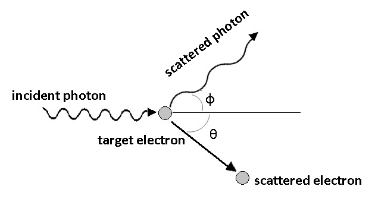
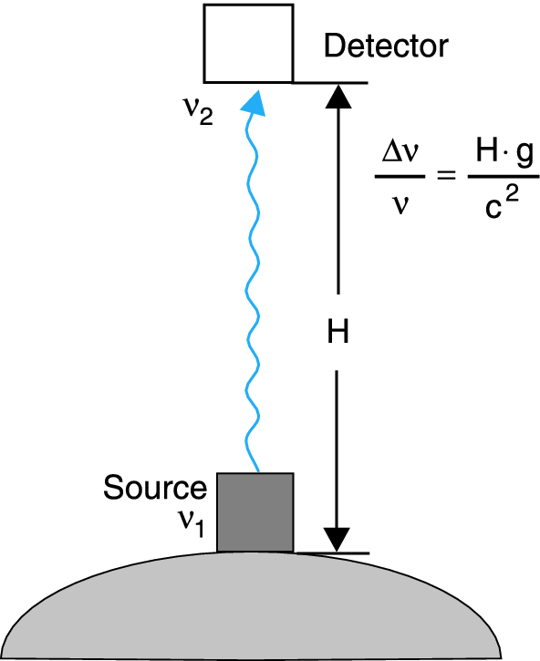

Particle Nature of Light
At the beginning of the 20th century, experimental findings emerged that could not be explained by the electromagnetic theory of light. Several key experiments gave rise to the development of quantum physics:
- The explanation of the photoelectric effect
- The interpretation of the Compton effect
- The discrepancy between predicted and observed spectral distribution of cavity radiation (ultraviolet catastrophe)
These findings revealed that both classical mechanics (which predicts defined particle trajectories based on initial conditions) and classical electromagnetic wave theory (based on Maxwell’s equations) needed revision for describing atomic-scale phenomena.
During the 18th century, there was a fundamental dispute about the nature of light. Newton proposed a particle-like character based on straight propagation and refraction. In contrast, Huygens proposed a wave-like character based on interference and diffraction. The wave interpretation seemed confirmed when Heinrich Hertz discovered electromagnetic waves, with light being interpreted as a special spectral region governed by Maxwell’s equations. We will focus on the photoelectric effect, which demonstrates light’s particle properties.
The Hallwachs and Photoelectric Effect
Hallwachs and Lennard
In 1888 Wilhelm Hallwachs published an experiment with charged foils connected to a metal plate which was irradiated with ultraviolet light (we did this experiment in the last lecture before Christmas). If the foils and the plate are negatively charged and electrically isolated against the surrounding, the charge does decrease upon irradiation with ultraviolet light. In contrast, if the system is positively charged, the charge does not decrease. Hallwachs concluded that the light is responsible for negative charges leaving the metal plate.

Later in 1902 Lennard measured the photocurrent between two plates in vacuum. The current set in already at a negative voltage \(U_0\) between the plates, increased with rising voltage, and reached a plateau which depended only on the light’s intensity. He concluded:
The electrons must bear a minimum energy in order to overcome the oppositely directed electric field, \(E_{\mathrm{kin}} \le e \cdot U_0\).
The kinetic energy \(m v^2/2\) of the photoelectrons depends on the frequency \(\nu\) of the light, not on the light’s intensity.
The number of photoelectrons is proportional to the light’s intensity.
There is no delay between light irradiation and electron emission.
Photoelectric Effect
Expectations for Waves
If we assume a fully wave-like behavior of light, then light with a radiation power of \(P_{\mathrm{L}}\) might hit a surface with an area \(A\) and shares its energy equally between all electrons. For a penetration depth of \(\Delta z \approx \lambda\) and a density of the conducting electrons of \(N\), then every conducting electron gets on average the energy of
\[ \bar{\Delta W} = \frac{P_\mathrm{L}}{N \cdot A \cdot \lambda} \; \Delta t \] within the time interval \(\Delta t\). Thus, the work function can be compensated in the case of
\[ \Delta t > W_{\mathrm{a}} \; \frac{N \cdot A \cdot \lambda}{P_\mathrm{L}} \mathrm{.} \]
Let us consider a zinc plate with a work function of \(W_{\mathrm{a}} = 4 \, \mathrm{eV}\) and a light source with a spectral filter \(\lambda = 250 \; \mathrm{nm}\) emitting a power of \(P_\mathrm{L} = 1 \; \mathrm{W}\) at a distance of \(R = 1 \; \mathrm{m}\) away from our zinc plate, there will be an intensity of
\[ I_{\mathrm{L}} = \frac{P_\mathrm{L}}{4\pi R^2} \approx 8\cdot 10^{-6} \; \frac{\mathrm{W}}{\mathrm{cm}^{-2}} \]
reaching the plate. For a penetration depth of \(\Delta z \approx \lambda\) this intensity will be distributed between
\[ N = 10^{23} \cdot \mathrm{cm}^{-3}\cdot \lambda = 2.5 \cdot 10^{18} \; \frac{1}{{\mathrm{cm}^{-2}}} \]
electrons, whereas each electron acquires on average a power of
\[ P_{\mathrm{el}} = 3 \cdot 10^{-24} \; \mathrm{W} = 2 \cdot 10^{-5} \; \mathrm{eVs}^{-1} \mathrm{.} \]
Thus, it will take a time of \(\Delta t = W_{\mathrm{a}}/P_{\mathrm{el}} = 2 \cdot 10^5 \; \mathrm{s}\) for one electron to acquire enough energy to leave the zinc plate. This result is in clear contrast to experimental findings.
Explanation by Einstein
In 1905 Einstein successfully explained these findings on the basis of the quantum model of light. According to this model every absorbed photon transfers its energy \(h \cdot \nu\) completely to one electron. The maximum kinetic energy of an electron is then governed by
\[ E_{\mathrm{kin}}^{\mathrm{max}} = h \cdot \nu - W_{\mathrm{a}} \mathrm{,} \]
with \(W_{\mathrm{a}} = -e \left( \phi_{\mathrm{vac}} - \phi \right)\) being the work function of the cathode material (often the vacuum work function is set to zero, \(\phi_{\mathrm{vac}} = 0\)). The work function is the amount of energy one has to compensate in order to bring one electron from bulk into vacuum against the forces binding the electron in bulk.
The work function determines at which frequency or wavelength the photoelectric effect occurs. Below are typical work functions for various metals:
| Metal | Work Function (eV) | Threshold Wavelength (nm) |
|---|---|---|
| Cesium | 1.95 | 636 |
| Potassium | 2.30 | 539 |
| Sodium | 2.75 | 451 |
| Calcium | 3.20 | 388 |
| Zinc | 4.31 | 288 |
| Copper | 4.70 | 264 |
| Silver | 4.73 | 262 |
| Platinum | 6.35 | 195 |
These values show why alkali metals like cesium and potassium are particularly suitable for photoelectric devices, as they respond to visible light, while metals like platinum require ultraviolet radiation.
Since one can determine the maximum kinetic energy \(E_{\mathrm{kin}}^{\mathrm{max}} = -e\cdot U_0\) (\(U_0 < 0\)) from the voltage \(U_0\) at which the photocurrent sets in and
\[ -e\cdot U_0 = h\cdot\nu - W_{\mathrm{a}} \mathrm{,} \]
one is able to determine the work function on the basis of the intercept of the \(-e\cdot U_0\) vs. \(h\cdot\nu\) curve and Planck’s constant from the slope of the curve.
One example for an experiment proving Einstein’s explanation of the photoeffect was provided by von Joffé and Dobronrawov in 1925. They used small, charged bismuth beads held within a Millikan capacitor and irradiated those beads with low-dose X-rays. Every change of the overall charge of the beads interferes with the equilibrium in the capacitor, and can be observed by means of a change of the bead position. Using a radiation power of \(P = 10^{-12} \; \mathrm{W}\) meaning an emission rate of \(\dot{N} = 10^3\) photons per second with an energy of \(h \cdot \nu = 10^4 \; \mathrm{eV}\) on average every 30 minutes a change of the bead charge was detected. The number of photons arriving at one bead within a time interval \(\Delta t\) is \(Z = \dot{N} \cdot \Delta t \cdot \mathrm{d} \Omega/ \left( 4\pi \right)\), with \(\mathrm{d} \Omega\) as the solid angle covered by the bead. The calculated time constant of \(Z\) was in well agreement with the observed rate of the charge alteration. If we again assume a wave-like explanation of the photoeffect, the emitted power within the according solid angle will be absorbed by the bead and distributed between all its electrons. As a consequence the bead as a whole will have collected enough energy in order to release an electron within the same period of time. However it cannot be explained how all \(10^{12}\) atoms are supposed to combine their energy in one, single electron at the very same time.
The Compton Effect
Another example for demonstrating the corpuscle (particle-like) character of light is the Compton effect. If an arbitrary material is irradiated with X-rays of wavelength \(\lambda_0\), one can detect scattered light with the same wavelength \(\lambda_0\) but also scattered light with a greater wavelength \(\lambda_{\mathrm{S}} > \lambda_0\). Moreover, the wavelength of the scattered light seems to depend much stronger on the scattering angle than on the scattering material.

This phenomenon can be explained by means of the photon model and inelastic impact. Every photon bears an energy of \(E = h \cdot \nu = \hbar \cdot \omega\) and a momentum of \(p = h/\lambda = \hbar \cdot k\). If a photon impacts into a weakly bound electron with a binding energy much smaller than the photon energy (\(E_\mathrm{B} \le E\)), we can neglect the binding energy and assume the electron as free electron. In addition we simplify further and assume the electron as being at rest. During the collision event
\[ h \nu_0 + \mathrm{e}^{-} \longrightarrow h \nu_{\mathrm{S}} + \mathrm{e}^{-} + E_{\mathrm{kin}} \]
energy and momentum are conserved. The law of conservation of energy then reads as
\[ h \, \nu_0 = h \, \nu_\mathrm{s} + E_{\mathrm{kin}}^{\mathrm{e}} \]
with \(E_{\mathrm{kin}}^{\mathrm{e}}\) as the relativistic kinetic energy of the electron
\[ E_{\mathrm{kin}}^{\mathrm{e}} = \frac{m_0 c^2}{\sqrt{1-\beta^2}} - m_0 c^2 \]
and \(\beta = v/c\). If we ascribe a momentum like
\[ \vec{p} = \hbar \, \vec{k} \]
with
\[ \left| \vec{p} \right| = \hbar \, \left| \vec{k} \right| = h \frac{1}{\lambda} \]
to the photon, we can formulate the law of momentum conservation as follows,
\[ \hbar \, \vec{k_0} = \hbar \, \vec{k_{\mathrm{s}}} + \vec{p^{\mathrm{e}}} \]
with
\[ \vec{p^{\mathrm{e}}} = \frac{m_0 \vec{v}}{\sqrt{1-\beta^2}} \mathrm{.} \]
If we isolate the square of the momentum of the electron, we obtain an equation depending on the squared difference between the wavevectors of the incident and scattered photon. Calculating this difference leads to a scalar product between these two vectors and necessitates the introduction of the angle between the propagation direction of the incident and scattered photon. We denote this angle as \(\phi\),
\[ \begin{eqnarray} \frac{m_0^2 v^2}{1-\beta^2} & = & \hbar^2 \left( \vec{k_0} - \vec{k_{\mathrm{s}}} \right)^2\\ {} & = & \hbar^2 \left( k_0^2 + k_{\mathrm{s}}^2 + 2 k_0 k_{\mathrm{s}} \cos \left( \varphi \right) \right)^2\\ {} & = & \frac{h^2}{c^2} \left( \nu_0^2 + \nu_{\mathrm{s}}^2 + 2 \nu_0 \nu_{\mathrm{s}} \cos \left( \varphi \right) \right)^2 \end{eqnarray} \]
From the law of energy conservation we get
\[ \frac{m_0^2 v^2}{1-\beta^2} = \frac{h^2}{c^2} \left( \nu_0 - \nu_{\mathrm{s}} \right)^2 + 2 h m_0 \left( \nu_0 - \nu_{\mathrm{s}}\right) \mathrm{,} \]
which we can compare with the law of momentum conservation and get
\[ \nu_0 - \nu_{\mathrm{s}} = \frac{h}{m_0 c^2} \, \nu_0 \, \nu_{\mathrm{s}} \, \left(1- \cos \left( \varphi \right) \right) \mathrm{.} \]
Now making use of \(1- \cos \left( \varphi \right) = 2 \sin^2 \left( \varphi/2 \right)\) and \(\nu = c/\lambda\) we achieve the Compton formula
\[ \begin{eqnarray} \lambda_{\mathrm{S}} & = & \lambda_0 + 2 \frac{h}{m_0 c} \sin^2 \left( \varphi/2 \right)\\ {} & = & \lambda_0 + 2 \lambda_{\mathrm{C}} \sin^2 \left( \varphi/2 \right)\\ \end{eqnarray} \]
with \(\lambda_{\mathrm{C}}\) denoting the Compton wavelength of the electron,
\[ \lambda_{\mathrm{C}} = \frac{h}{m_0 c} = 2.4262 \cdot 10^{-12} \; \mathrm{m.} \]
The Compton wavelength is a constant and represents the change of the wavelength \(\Delta \lambda = \lambda_{\mathrm{S}} - \lambda_0\) at a scattering angle of \(\varphi = 90^{\circ}\). Results from experiments almost perfectly coincide with the Compton formula. Furthermore the ratio between the wavelengths
\[ \frac{\lambda_{\mathrm{S}}}{\lambda_0} = \frac{h \nu_0}{m_0 c^2} \]
represents the ratio between the energy of the incident photon and the energy of the electron at rest. Thus, if we know the mass of the electron, we can determine \(\varphi\) and \(\lambda_{\mathrm{S}}\) (and therefore \(\lambda_{\mathrm{C}}\)) and calculate \(h\).
Properties of Photons
Having established the particle nature of light through the photoelectric and Compton effects, we can now summarize the key properties of photons. These quantum particles of electromagnetic radiation exhibit remarkable characteristics that bridge the classical wave description of light with its quantum nature. Photons are massless particles that always travel at the speed of light in vacuum, carry quantized energy and momentum, and can interact with matter through absorption and emission processes. Unlike classical particles, they cannot be brought to rest and their energy is directly proportional to their frequency. Below we examine these properties in detail.
Energy and Momentum
Every electromagnetic field consists of quanta of energy \(h \cdot \nu\), which we call photons. If we remember back for the cavity resonator, we can now state the energy density of the electromagnetic field \(\omega_{\mathrm{em}}\) as the density of modes \(n\) multiplied with the quantum of energy \(h \cdot \nu\)
\[ \omega_{\mathrm{em}} = n \cdot h \cdot \nu \mathrm{.} \]
We can further comprehend the flux \(I = \varepsilon_0 c E^2\) of an electromagnetic wave as a particle flux \(\dot{N}\) of photons
\[ I = \dot{N} h \nu \]
with \(\dot{N} = n \cdot c\). Therefore, if a light wave with a flux of \(I\) is shining on an area is tantamount with a particle flux of photons reaching this area.
As demonstrated on the basis of the Compton effect, every photon bears a momentum \(\vec{p} = \hbar \cdot \vec{k}\) with the magnitude \(\left| \vec{p} \right| = p = h \nu / c\). As a consequence, if we are able to assign an energy density to the density of modes, we are also able to assign a momentum density,
\[ \pi_{\mathrm{em}} = n \cdot \hbar \cdot k \mathrm{.} \]
Then, the relation between the energy density \(\omega_{\mathrm{em}}\) of an electromagnetic wave and the momentum density \(\pi_{\mathrm{em}}\) of the very same wave reads as
\[ \omega_{\mathrm{em}} = c \cdot \pi_{\mathrm{em}} {.} \]
Angular Momentum
Concerning the angular momentum of photons, if a free atom absorbs a photon, the angular momentum of the atom is altered by \(\hbar\). Thus, the law of the conservation of the angular momentum predicts that a photon does have an angular momentum of \(\hbar\), independent of its energy \(h \cdot \nu\). If left-handed circular polarized light (\(\sigma^{+}\)) propagating along \(z\) is absorbed by a free atom, its angular momentum \(J_z\) is changed by \(\Delta J_z = + \hbar\). In the case of right-handed circular polarized light (\(\sigma^{-}\)), the change of the angular momentum of the electron is negative \(\Delta J_z = - \hbar\). We can conclude, that for \(\sigma^{+}\)-polarized light the vector of the angular momentum is oriented along the direction of propagation, whereas for \(\sigma^{-}\)-polarized light the vector of the angular momentum is oriented against the direction of propagation. Since the direction of propagation is determined through the wavevector, we can conclude for the photon’s angular momentum
\[ \vec{L}_{Ph} = \pm \hbar \, \frac{\vec{k}}{\left| \vec{k} \right|} \]
Linearly polarized light can be comprehended as superposition of \(\sigma^{+}\)- and \(\sigma^{-}\)-polarized light to equal parts. Thus the angular momentum of linearly polarized light adds up to \(0\).
Effect of Gravity on Photons
From special relativity we know that mass is affected by the relative motion of reference systems:
\[ m = \frac{1}{\sqrt{1-\left( \frac{v}{c}\right)^2}} \, m_0 \]
Only particles with a rest mass \(m_0 = 0\) can travel at the speed of light, which is why photons must have zero rest mass. For the energy of a photon, we find:
\[ \begin{eqnarray} E & = & \sqrt{p^2c^2 + m_0^2 c^4}\\ {} & = & p c\\ {} & = & \frac{h}{\lambda} c\\ {} & = & h \nu \end{eqnarray} \]
in accordance with previous energy and momentum considerations. If we assign an effective mass \(m\) to the photon:
\[ m = \frac{E}{c^2} = \frac{h \nu}{c^2} \]
this photon must perform work when traveling in a gravitational field. Moving from position \(\vec{r_1}\) with gravitational potential \(\Phi(\vec{r_1})\) to position \(\vec{r_2}\) with potential \(\Phi(\vec{r_2})\), the work is:
\[ W = m \cdot \Delta \Phi = \frac{h \nu}{c^2} \left( \Phi \left( \vec{r_2} \right) - \Phi \left( \vec{r_1} \right) \right) \]
By energy conservation, the photon’s energy \(h\nu\) must change by this amount, leading to a frequency shift:
\[ \nu_2 = \nu_1 \left(1-\frac{\Delta \phi}{c^2} \right) \]
or in relative terms:
\[ \frac{\Delta \nu}{\nu} = \frac{\Delta \Phi}{c^2} \]
This remarkable prediction - that photons experience a redshift (longer wavelength, smaller frequency, lower energy) when rising in a gravitational field - was first experimentally verified by Pound and Rebka in 1959. Using the Mössbauer effect, they measured the frequency shift of gamma rays from \(^{57}\)Fe (14.4 keV) traveling vertically over a height of 22.5 meters at Harvard University. The expected relative frequency shift was extremely small:
\[ \frac{\Delta \nu}{\nu} \approx 2.5 \times 10^{-15} \]
The detection of gravitational redshift requires extremely precise frequency measurements (\(\Delta \nu/\nu \approx 10^{-15}\)). This was made possible by the Mößbauer effect, which allows for recoil-free emission and absorption of gamma rays in crystals.
In free atoms, the emission or absorption of a gamma ray causes recoil, shifting the photon energy by about \(10^{-3}\) eV. For a gamma ray of energy \(E_\gamma\), the recoil energy is:
\[E_R = \frac{E_\gamma^2}{2Mc^2}\]
where \(M\) is the mass of the nucleus. However, in a crystal lattice, the nucleus is not free to recoil. Instead, the recoil momentum can be transferred to the entire crystal if:
- The nucleus is tightly bound in the crystal lattice
- The recoil energy is less than the energy of the lowest lattice vibration (phonon)
- The entire crystal acts as a single quantum mechanical system
In this case, the effective mass \(M\) in the recoil energy formula becomes the mass of the entire crystal, making \(E_R\) negligible. For \(^{57}\)Fe nuclei in a crystal:
- Gamma ray energy: 14.4 keV
- Natural linewidth: \(\approx 10^{-8}\) eV
- No recoil broadening
- Extremely sharp resonance
This allows for the detection of the tiny frequency shifts caused by gravity over the 22.5 m height difference in the Harvard tower.
The experiment confirmed Einstein’s prediction to about 1% accuracy, demonstrating that even massless photons are affected by gravity, with their energy decrease exactly matching the increase in gravitational potential energy \(m\Delta\Phi\) where \(m = h\nu/c^2\). This result was not only the first laboratory confirmation of gravitational redshift but also provided strong support for the equivalence principle and the gravitational time dilation predicted by general relativity.

The success of this experiment shows how quantum mechanics and general relativity make consistent predictions about the behavior of photons in gravitational fields, though a complete quantum theory of gravity remains one of physics’ greatest challenges.